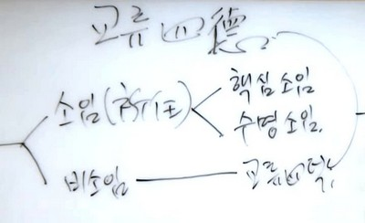
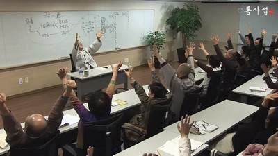
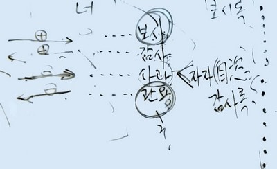

一般課程 － 22 講 ( 動映像받아쓰기) －
第 16 講 交流 四德
안녕들 하세요.
지금 우리들이 工夫하는 것은 和合입니다. 앞에서 和合어떻게 할 것인가에서 화3요를 工夫했습니다. 관심의 지평 위에 감지, 表現하고 공감, 반응한다는 交流공식(나눔 공식)도 工夫했습니다. 그 다음에 인간관계에서 미세한 주고받음이 큰 關係를 창출해 낸다. 미세한 것이 결코 미세한 것이 아니다. 그래서 1g 1t 의 原理라는 이름으로 工夫하고 그랬습니다. 이 時間에는 交流 四德이라고 하는 제목으로 和合론의 일부를 다루게 되겠습니다.
인간관계는 交流 四德과 같은 나눔의 場이 될 때 드디어 확 피어오르게 됩니다. 그래서 우리들 人生에 있어서 보시, 感謝, 사과 관용이라는 交流 四德은 대단히重要한 덕성이지요. 그리고 이것은 덕행입니다. 덕성이자 덕행입니다. 보시, 感謝, 사과, 관용을 지식 次元이 아니라 지혜 次元으로, 덕성 次元으로 가만히 음미해보기로 합시다. 이 交流 四德 은 이론 體系상으로는 作善에 해당이 됩니다. 作善 은 비소임에 해당됩니다. 그래서 作善의 비소임을 和合으로 끌어와서 이야기하고 있는 것입니다.
교류 四德을 하는 김에 作善까지 엮어서 工夫를 해보도록 합시다. 理想共同體 5요는 正體, 大願, 修心, 和合, 作善 입니다. 이 作善은 착한 짓을 한다 는 뜻입니다. 착한 짓이라고 했다 하면 그건 보시니까 作善은 보시의 다른 이름이기도 해요. 또 일해야 되니까 作善은 일이라고 해도 됩니다. 우리들이 世上에서 살다가 보면 責任이 주어지는 일거리들이 있습니다. 이 作善에는 責任이 주어지는 소임이 있어요. 아버지는 아버지로서 責任이 주어집니다. 그러면 아버지로서 역할을 해야 됩니다. 그래서 이 소임은 행하지 않을 것 같으면 責任이 따라옵니다.
그런데 이 소임은 두 가지로 나눠지지요. 하나는 핵심 소임, 다른 하나는 수명 소임입니다. 우선 수명 소임은 무엇이냐 하면 이름에 따른 소임입니다. 아버지라면 아버지로서 해야 할 일이 있는데, 이것이 아버지라는 이름의 소임입니다. 어머니는 어머니의 소임, 그 아버지가 學校 선생님이라면 선생님으로서의 소임이 있어요. 또 아들이라면 아들로서의 소임이 있어요. 한 사람에게 여러 이름이 붙어있지 않습니까? 그러니까 사람은 누구나 수명 소임 次元에서 다양한 소임들을 가지고 있어요. 우선 가정에서도 보면 아버지라면 아버지의 소임이 있죠, 또 그 아버지에게 아버지가 있으면 그 아버지는 아들이기도 하니 아들 소임도 있습니다. 또 남편이니까 남편으로서의 소임이 있습니다. 또 회사에 나가게 되면 회사 사원입니다. 사원이라는 소임이 있죠. 또 친구들 모임에서 회장이라면 회장이란 소임이 있습니다. 그래서 한 사람은 다양한 이름을 갖게 되고 다양한 소임을 의무 的으로 짊어지게 됩니다.
핵심 소임은 쉽게 말해서 그 사람의 미션입니다. 미션的인 것. 직업과 같은 것. 내가 世上에 태어나서 이 일을 하려고 태어났는가 하는 그것이 핵심的인 일입니다. 이렇게 소임에는 핵심소임과 수명소임이 있습니다.
또 일에는 責任이 따라붙지 않는 소임도 있는데 이것이 비소임입니다. 비소임인 소임이라는 의미입니다. 그래서 비소임 소임이라고 말할 수 있는데 그냥 비소임이라고 하는 겁니다. 이 비소임에 해당이 되는 것이 바로 이 交流 四德입니다. 그래서 이 交流 四德은 비소임의 交流 四德인데 이것이 只今 이 時間 工夫거리라는 겁니다.
교류 四德. 너와 나 사이에 네 가지 덕이 交流가 된다. 자, 인간관계는 어떻습니까. 두 사람의 인간관계 단순합니까? 복잡합니까? 모를 때는 복잡하게 느껴지는데 알고 보면 대단히 단순합니다. 簡單해요. 그러면은 나와 너 사이. 내가 여기에 있고, 너가 여기에 있다고 할 때, 나와 너 사이의 인간관계는 모르면 굉장히 복잡할 것 같은데 알고 보면 簡單하다는 말입니다. 내 立場에서 보면 내가 너에게 무언가를 주든지 너로부터 무언가를 받든지 이것이 전부입니다. 주기 받기, 이것이 전부입니다. 그런데 이 주기 받기가 플러스를 주고받을 수가 있고, 또 마이너스를 주고받을 수가 있습니다. 플러스 주고받기와 마이너스 주고받기, 이것이 인간관계의 전부입니다.

여기에서 우리들은 어떤 당위론을 原理的으로 도출할 수가 있어요. 내가 너에게 플러스 주는 것이 좋아요? 안 좋아요? 좋지요. 이것이 보시입니다. 상대방으로부터 내가 플러스를 받았어. 그러면 내가 해야 할 일은 뭐지요? 플러스를 받았을 때 내가 해야 할 일은 플러스를 받았으니까 感謝합니다, 하고 感謝하는 일이 하나입니다. 상대방에게 내가 마이너스를 주었어. 내가 상대방을 아프게 밟았어. 그러면 내가 해야 할 일은 미안합니다, 하고 사과하는 일입니다. 상대방으로부터 마이너스를 내가 받았어. 그렇게 되면 어떻게 하지요? 지구에 와서 마이너스를 받았을 때 어떻게 해야 되냐고 물으니까 지구 사람들 70억 인류의 대답이 ‘복수’ 였습니다. 그래서 이것 때문에 내가 지구에 안 남으려고 해요. 지구 사람들은 복수를 한다고 하는데 우리 화성에서는 마이너스를 받았을 때는 관용을 합니다. 내가 관용을 가르치려고 지구에 왔어요. 그래서 인간관계의 주고받는 일. 이것은 보시 할 일, 感謝 할 일, 사과 할 일, 관용 할 일, 이것이 전부다 하는 겁니다. 어떻습니까? 여러分.
자, 修練場에서는 우리가 어떻게 해 왔지요? 내가 앞으로 보시할 것, 보시록을 쓰게 하고, 感謝록을 쓰게 하고, 사과록을 쓰게 하고, 관용은 修心에서 배운 나지사 暝想으로 합니다. 상대방에게 내가 당해서, 마이너스를 받아서, 속이 상합니다. 그때는 복수를 하려고 말고 구나겠지감사로 관용하라 해서 관용은 修心장의 구나겠지감사로 돌려놓고, 보시, 感謝, 사과는 修練場에서는 하게 됩니다.
그래서 보시록에다 내가 只今부터 한 달 안에 내 주변 사람들에게 무엇인가 베풀 것을 具體的으로 씁니다. 어머니에게 한 달에 한 번 전화할까 말까 했었는데 一週日에 한 번씩 전화한다. 이렇게 쓰는 것입니다. 또 어머니에게 용돈을 10만원밖에 못 드렸는데 용돈을 올려서 15만원을 드리겠다. 어머니한테 15만원이 좀 적은가. 좀 적지요? 얼마라고 하면 좋을까? 修練場에서라도 제대로 갖추어 드려야지. 20만원으로 할까? 50만원? 그러면 자빠지지. 그러면 30만원이라고 합시다. 자식들이 아들 딸 다섯 명이라고 하면은 30만원이라고 해도 백오십만원 밖에 안 되네. 150만원 가지고 엄마 아빠 살기 어렵지? 역시 50만원 해야 되겠다. 50만원. 또 보시 무엇, 무엇, 무엇… 이런 것들을 쭉 쓰게 해서 한 달 안에 실천을 하십시오, 이럽니다. 그러니까 여러 分들이 집에서 잘 해오셨겠지만 이 자리에 오신 공덕으로 해 오신 것 더욱 잘하기 爲해서 보시록을 한 번 써보십시오.
그 다음에 感謝록입니다. 앞에서 被恩감사라는 말을 내가 써보았는데 被恩 感謝에 해당하는 것이 이 感謝입니다. 플러스를 받았다는 말은 은혜를 입었다는 걸 의미합니다. 은혜를 입었으니 은혜 입은 것에 對해서 感謝하라는 겁니다. 그래서 이 때 感謝록을 써라 하는 겁니다. 아, 나도 누구한테 무슨 은혜를 입었는데 그 感謝를 아직 못했구나.

눈꽃님, 感謝합니다. 정말 내가 이 명주 머플러 두르고 거울 앞에 한番 서봤는데 제법 괜찮은 거예요. 그래서 아, 이래서 좋은 옷을 찾고 이러고저러고 하는구나, 하고 문득 느꼈다니까. 이런 것 하니까 다르더라고요. 또 보는 사람마다 이구동성으로 한결 낫다고 합니다. 感謝합니다. 그라고 또 갓김치 感謝합니다. 幸福마을 갓김치 말입니다. 그래, 幸福마을에 오셔서 공양주가 여기도 있다고 하셨다고 하더라고요. 그거 진짜 感謝합니다.
예, 이런 式으로 뭣인가 입은 은혜가 있으면 感謝하자 그겁니다. 또 있습니다.
연화님. 感謝합니다. 연화님은 요새 내 기쁨조예요. 내가 한 마디 法問하지 않아요? 그러면‘저는요 오늘, 뭣뭣뭣 하면서 좋았다고 딱딱딱 이야기를 해서 나를 기쁘게 해줍니다. 表現해준 것 고마워요. 表現하지 않아도 큰 상관은 없겠지만 表現하니까 내가 우선 인간 的으로 기뻤고, 表現을 하니까 아하, 연회님 속에 그것이 어떤 式으로 꽂히고 있구나를 아는 시원함도 있어요. 또 계속 들었던 것인데 거기서 살짝 다른 뉘앙스 부분을 딱 발견해가지고 그것을 말하면서 그 부분에 아하!를 했다고 하는 겁니다. 그래서 내가 참, 그거 좋구나. 거듭 들었던 것인데 매너리즘에 빠지지 않고 이러니 좋구나 합니다. 고마워요.
아무튼 여러分들도 입은 은혜에 對해서 感謝꺼리들을 쭉 써 보십시오.
아, 그리고 연화님 옆에 있는 심월님한테도 感謝 하나 해야겠어요. 심월님은 손의 마술사입니다. 지압, 오늘도 한番 해주면 좋겠네요. 지압을 한番 해주지요. 그러면 아주 좋아요. 그리고 심월님은 사람의 몸을 알더라고. 그 쪽 전문가더라고요. 그때마다 내가 幸福했었어요. 表現을 얼핏 했을 법 하지만 거듭 한番 表現합니다.
아무튼 感謝록을 쓰세요. 그래서 感謝 表現을 꼭 하시라고요. 이러고 보니깐 感謝할 사람이 전부 다야. 야, 복잡해져버렸네. 괜히 始作해가지고. 하하하.
그 다음은 사과록입니다. 사과록은 여러分들이 마이너스를 주었을 때입니다. 마이너스를 주었을 때 미안해져야 합니다. 그리고 미안함을 表現해야 합니다. 사과록도 가만히 느껴 보세요. 제법 있을 거예요. 그래서 보시록, 感謝록, 사과록을 이런 式으로 쓰면서 그것이 시행되는 世上이 된다면 그 世上, 괜찮을 겁니다.
마지막으로 보시라고 했습니다. 感謝, 사과, 관용 이것이 결국은 전부 보시예요. 보시의 넓은 의미 속에는 感謝, 사과, 관용이 다 들어갑니다. 그리고 이 보시는 바로 作善입니다. 作善은 보시의 다른 이름이고, 또 보시는 作善의 다른 이름입니다. 그리고 이 보시에 對해서는 깨달음으로 와야 됩니다. 인간관계에서 시행되어져야 할 것이 억만 가지가 있을 텐데 일 번으로 대서특필해야 할 어떤 덕목이 있다면 무엇이겠어요? 보시입니다. 베푸는 것입니다. 상대방을 기쁘게 할 수 있는 플러스를 주는 것. 이것입니다. 이 보시가 인간관계 윤리의 1번입니다. 그래서 여기서는 좁은 의미로, 이 네 가지 자락에서 좁은 意味로 보시라고 썼지만 이 보시는 뜻을 살짝 넓히면 전부가 보시하는 거예요. 感謝하는 마음을 보시하는 것입니다. 미안하다 하는 사과의 마음을 보시하는 겁니다. 너를 내가 풀어주겠다 하는 관용의 마음을 보시하는 거예요. 그래서 보시에 눈을 떠야 됩니다.
내가 記憶할 때는 사과를 하지만 記憶하지 못할 수도 있습니다. 그래서 여러分들은 가까운 사람 사이일수록 自恣請을 해야 됩니다. 自恣입니다. 자자청은 무엇이냐. 아무개님. 아무개님하고 나하고 인간관계가 世上 어느 누구보다도 늘 밀접하게 이렇게 交流가 되고 있잖아요. 그 過程에 내가 당신을 아프게 해놓고, 피해를 주고, 마음을 무겁게 해놓고도 내가 모르고 있을 수도 있지 않습니까. 나는 記憶이 나지 않는데 당한 사람은 記憶을 하는 법입니다. 그러니까 제가 귀하에게 크든 적든 사과해야 할 상황이 늘 있을 수 있는 법 아닙니까. 그것이 있다면 온전히 그것을 돌려받고 싶습니다. 그러고서 받은 다음에 정식으로 사과를 하고 싶습니다. 只今까지 살아오면서 저에게 유감을 느낀 게 있다면 꼭 말씀을 해주십시오.“ 이것이 자자청입니다. 이것은 가까운 사람 사이에는 필히 해야 됩니다. 特히, 부부사이에, 자녀들에게, 부모님에게도 좋습니다. 그래서 사과 옆에다 자자청을 붙여 놓고 여러分들이 記憶나지 않는 것은 자자청을 해서 사과를 하는, 그래서 인간관계에서 보시, 感謝, 사과, 관용이 實踐的으로 실생활에서 되게 된다면 關係 和合은 제대로 피어오를 것입니다.

왜? 굉장히 具體的인 것들이잖아요. 실제로 주고받고 하는 것이지 않습니까? 그런데 그냥 맨입으로 마음 나누기만 수준 높게 하더라도 상당히 감당해낼 수 있기 때문에 맨입으로 하는 마음 나누기도 아주重要합니다. 거기에다가 이것이 알파로 보태지면 인간관계는 정말 굉장해져 버리지요.
자, 活佛 3박자하고 끝냅시다.
활불인 이 일물은.
행복하다, 幸福하다, 幸福하다!!!
(하하하하하)
나 없다. 나 없다.
感謝합니다.